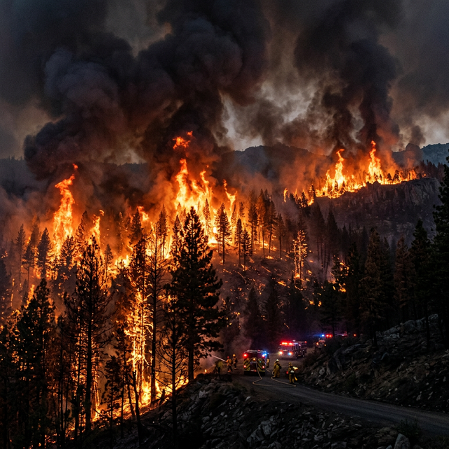

Disaster Preparedness Guidelines
Official NDMA-aligned protocols and mitigation strategies for all major disaster types in India — updated by OmniGuard AI.

Fires spread rapidly and generate toxic smoke. Smoke inhalation is the leading cause of casualties. Always prioritize evacuation over belongings.
Before Disaster
- Install smoke detectors & test monthly.
- Identify multiple exit routes.
- Keep fire extinguishers accessible.
During Disaster
- Crawl low under smoke.
- Feel doors for heat before opening.
- Never use elevators; use stairs.
After Disaster
- Do not re-enter until declared safe.
- Seek immediate medical help for inhalation.

Earthquakes strike without warning. Structural collapse and falling debris are the primary hazards. Drop, Cover, and Hold On immediately.
Before Disaster
- Secure heavy furniture to walls.
- Prepare a 72-hour survival kit.
During Disaster
- DROP to your hands and knees.
- COVER your head/neck under sturdy furniture.
- HOLD ON until shaking stops.
After Disaster
- Expect aftershocks. Be prepared to Drop/Cover.
- Evacuate compromised structures immediately.

Flash floods can occur in minutes. Just 6 inches of rapidly moving water can knock down an adult, and 2 feet can sweep away vehicles.
Before Disaster
- Elevate essential electrical items.
- Identify high-ground evacuation routes.
During Disaster
- Never drive or walk through moving water.
- Move instantly to higher ground.
- Abandon submerged vehicles if waters are rising inside.
After Disaster
- Wait for official clearance before returning home.
- Avoid standing water (risk of electrocution or contamination).
Heat waves exceed 40°C and cause massive public health crises. India experiences severe heat waves between March–June. Vulnerable groups include elderly, outdoor workers, and children.
Prevention & Preparedness
- Stay indoors between 12 PM–3 PM; use fans/coolers.
- Wear light-coloured, loose cotton clothing.
- Keep Oral Rehydration Salts (ORS) stocked at home.
- Install reflective window shades and wet curtains.
- Never leave children or pets in parked vehicles.
During Heat Wave
- Drink 2–3 litres of water/day even if not thirsty.
- Seek shade or cool public buildings (cooling centres).
- If experiencing heat stroke (confusion, high temp), call 108 immediately and apply wet cloths to body.
- Check on neighbours, especially elderly. NDMA helpline: 1078.
Recovery
- Continue hydration and rest for 24–48 hours after extreme heat.
- Seek medical attention for heat-related illness symptoms.
Cold waves hit northern and central India from November–February, causing hypothermia, frostbite, and excess winter mortality, especially among homeless and rural populations.
Prevention & Preparedness
- Stockpile thermal blankets, warm clothing, and firewood.
- Seal gaps in windows/doors to prevent cold drafts.
- Keep warm beverages and high-calorie foods ready.
- Ensure heating equipment (heaters, sigris) are safe to use with ventilation.
During Cold Wave
- Wear multiple loose layers rather than one thick garment.
- For hypothermia (shivering, confusion): move to warm area, apply warm dry blankets, call 108.
- Do not rub frostbitten skin—rewarm gently in lukewarm water.
- Use indoor carbon-monoxide safe heating only. Never burn coal indoors.
Recovery
- Seek medical care for cold injuries such as frostbite.
- Donate unused warm clothing to local cold wave shelters.
Landslides are common in the Himalayan, Western Ghats, and North-East regions, often triggered by heavy rainfall, earthquakes, or slope cutting. Speed and mass make them instantly lethal.
Before a Landslide
- Know if your area is in a landslide-prone zone (NDMA Hazard Atlas).
- Watch for warning signs: cracks in slopes, new springs, leaning trees, rumbling sounds.
- Avoid building on steep slopes or near unstable hillsides.
- Plant vegetation on slopes to stabilise soil.
During a Landslide
- Evacuate immediately — get to high ground away from the path of the slide.
- If escape is impossible, curl tightly and protect your head.
- Move away from rivers and valleys — debris flows follow waterways.
- Stay off roads; bridges may be swept away.
After a Landslide
- Stay away until authorities declare area safe — secondary slides are common.
- Report casualties and request NDRF rescue at 1078.
- Check for injured persons in debris carefully without further disturbing the slope.
India's 7,500 km coastline—Andaman & Nicobar, Tamil Nadu, Odisha, Kerala—is tsunami-vulnerable. The 2004 Indian Ocean tsunami claimed over 10,000 Indian lives. Early warning systems now cover all coastal zones.
Before a Tsunami
- Know your Tsunami Evacuation Zone and route to high ground.
- Register for INCOIS Early Warning alerts (iAlert or Sachet app).
- Practice annual coastal community mock drills.
- Identify tall, sturdy buildings as vertical evacuation points.
During a Tsunami
- If you feel a strong earthquake near the coast — GO to high ground immediately!
- If the sea recedes rapidly and shore is exposed — this is a natural warning; evacuate NOW.
- Do NOT stop to watch. Move at least 3 km inland or to 30m elevation.
- Stay away from the coast. Multiple waves may hit 30–60 minutes apart.
After a Tsunami
- Wait for official "all clear" from INCOIS before returning to the coast.
- Avoid floodwater — may carry debris, chemicals, and sewage.
- Check on neighbours; contact SDMA for rescue at 1070.
Official NDMA Policy Repository
Download National Disaster Management Plans, Hazard Atlases, SDMA guidelines, and Standard Operating Procedures.